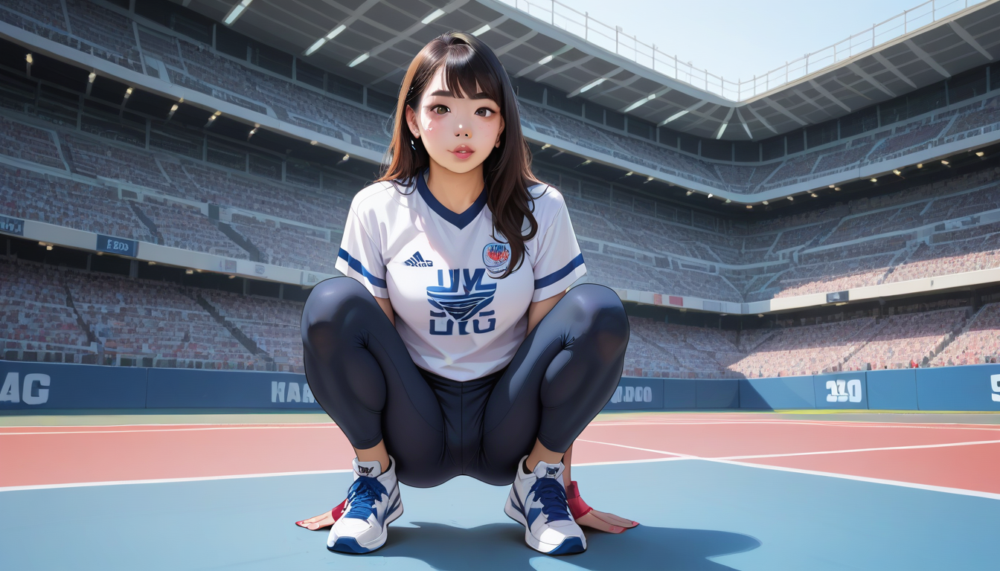

형님이 중고 시장에서 이 아이템을 처음 봤을 때의 기억이 난다. 2023 년 리스탁의 아이보리 컬러웨이 젤 카야노 14는 겉모습만으로는 거의 구별이 안 된다. 하지만 진짜로 중요한 건 **인솔 로고 프린트의 두께와 색상 농도**였다. 당시 원본과 비교하면, 글자 깊이가 미세하게 얇아진 버전이 섞여 나오기도 했다.
## 300 만 원의 오해
일반 소비자가 눈으로 보면 똑같지만, 리셀러로서는 그 한 줄이 전체 가치에 영향을 미친다. 만약 이 디테일을 놓치고 잘못된 로트 넘버로 인솔을 판다면, 예상치 못한 **마이너스 마진**이 발생할 수 있다. 특히 2023 년 재발행 모델 (BQ6498-105) 은 원판과 비교 시 인솔 인쇄의 해상도가 약간 낮아지는 경우가 있다.
## 아웃핏 체크는 신발보다 먼저?
홍대나 합정에서 가라오케를 갈 때, 신발을 보고 옷을 맞추는 사람들이 많다. 하지만 진정한 완성도는 신발과 셔츠의 **여백 조절**에 달렸다. 예를 들어, 매편 (Mapo) 지역의 셔츠룸에서 정찰제를 통해 확인한 데이터를 보면, 깔끔한 인솔 디테일은 정장 셔츠와 어울리는 데 더 유리하다.
마포 셔츠룸 가격 비교 | 투명 정찰제 데이터 분석 링크를 참고해, 신발과 조화될 만한 셔츠 스타일을 미리 체크하는 습관을 들이자. 이는 단순한 패션이 아니라 **브랜드 자산 관리**와 직결된다.
## 마케팅적 가치 정의
위키백과에 따르면 마케팅은 단순히 제품을 파는 게 아니라, 소비자에게 **가치를 부여하는 과정**이다 (https://ko.wikipedia.org/wiki/%EB%A7%88%EC%BC%80%ED%8C%85). 인솔의 미세한 차이가 재판매 가격에 영향을 주는 이유다. 즉, 겉보기엔 평범해 보이는 디테일도 마케팅 전략의 일환으로 작용할 수 있다.
## 결론
다음번 리스탁을 볼 때, 발판만 보고 넘어가지 말고 인솔까지 꼼꼼히 살피자. 그 작은 차이가 나중에 300 만 원 이상의 가치를 지켜줄 것이다. 특히 야간 모임이나 SNS 촬영 시, 신발 디테일을 신경 쓰면 전체적인 이미지가 훨씬 고급스러워진다. 형님은 항상 이 디테일 하나만으로도 시장 흐름을 읽는다.